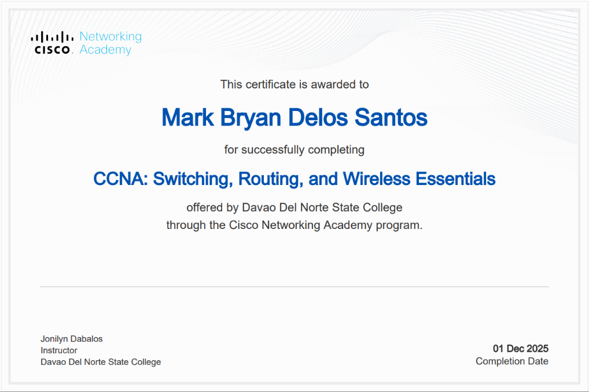
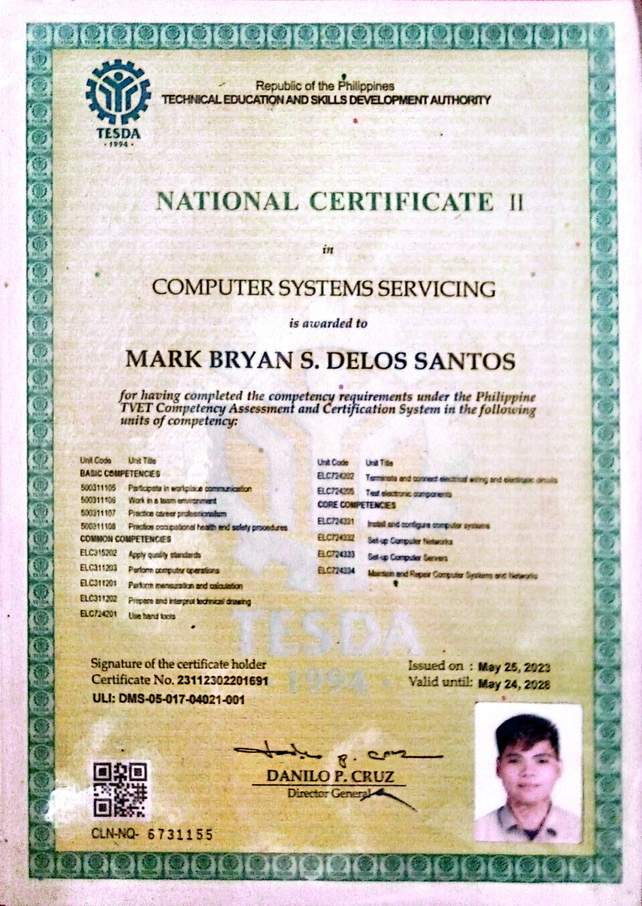

Full stack web development
Responsive web interfaces and full stack application development.
BS INFORMATION TECHNOLOGY · YEAR 4
MARK BRYAN DELOS SANTOS — IT COLLEGE STUDENT @ DNSC
Detail-oriented and creative BS Information Technology student with hands-on experience in full stack web development, mobile app development, database-driven systems, and multimedia content creation. Skilled in building responsive web interfaces, Flutter-based mobile applications, and secure data workflows using modern backend services. Passionate about leveraging technology for practical community solutions through data-driven applications, user-centered design, and privacy-aware platforms.
01 — THE PERSON
Thoughtful technology starts with understanding people.
I’m a fourth-year BS Information Technology student at Davao del Norte State College. I enjoy creating digital experiences that are useful, accessible, and thoughtfully designed. My interests span web and mobile development, database-driven systems, and multimedia content creation—with a focus on practical, community-centered solutions.
To contribute to useful, user-centered technology while growing as an IT professional through real projects, collaboration, and continuous learning.
02 — THE STUDIES
Grounded in information technology, growing through hands-on learning.
Davao del Norte State College · Fourth year
03 — STUDENT EXPERIENCE
As a student, I’m building experience through coursework, technical projects, and creative practice.
CLASSROOMResponsive web interfaces and full stack application development.
Flutter-based mobile applications and practical mobile experiences.
Secure data workflows with modern backend services.
Creative media as part of a broader digital experience.
04 — THE TOOLKIT
Areas of hands-on experience and interest, shaped by coursework and making.
05 — SELECTED WORK
PROJECT 001 · PERSONAL PORTFOLIO
My personal CV and portfolio brings together my studies, interests, and current learning journey in a responsive web experience.
View the portfolio repository06 — THE CREDENTIALS
Course and competency certificates earned through technical learning and assessment.

NETWORKING · CISCO NETWORKING ACADEMY
Davao Del Norte State College
COMPLETED

VOCATIONAL · TESDA
Technical Education and Skills Development Authority
ISSUED · PRINTED VALIDITY THROUGH
ONE LAST THING — SAY HELLO
Open to learning, collaboration, and opportunities to create technology that serves people.
markbryandelossantos4@gmail.com